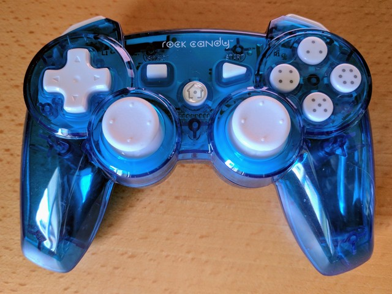

Rock Candy Controller Support¶
Support class kindly contributed by Keith Ellis

Rock Candy PS3 clone
-
class
approxeng.input.rockcandy.RockCandy(dead_zone=0.05, hot_zone=0.05)[source]¶ Driver for the Rock Candy PS3 controller, courtesy of Keith Ellis (keithellis74 on github)
-
__init__(dead_zone=0.05, hot_zone=0.05)[source]¶ Create a new Rock Candy driver
Parameters: - dead_zone (float) – Used to set the dead zone for each
approxeng.input.CentredAxisin the controller. - hot_zone (float) – Used to set the hot zone for each
approxeng.input.CentredAxisin the controller.
- dead_zone (float) – Used to set the dead zone for each
-